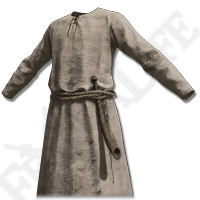
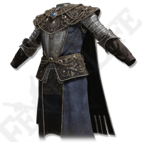
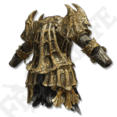

ТИП БРОНИ
Туловище
ЗАЩИТА
5.3
ИМЯ:
Тканое одеяние
ОПИСАНИЕ:
Одежда из грубой ткани. Такую носят многие жители Междуземья.
МЕСТОНАХОЖДЕНИЕ:
Замогилье, локация Грязная пещера. Доспех находится в сундуке, на арене с боссом.

ТИП БРОНИ
Туловище
ЗАЩИТА
11.8
ИМЯ:
Доспех карианского рыцаря
ОПИСАНИЕ:
Доспех заколдованного рыцаря, некогда служившего королевской семье Кария.
Заколдованные рыцари, помазанные самой Лунной королевой, были почитаемыми героями, но с упадком королевской семьи их братству пришёл конец.
МЕСТОНАХОЖДЕНИЕ:
Озёрная Лиурния, локация Академия Райи Лукарии. Комплект брони лежит у большого надгробия, рядом с которым молятся Гниющие трупы.

ТИП БРОНИ
Туловище
ЗАЩИТА
16.8
ИМЯ:
Уродливый драконий доспех
ОПИСАНИЕ:
Снаряжение безобразных Стражей Древа, украшенное изображениями драконов.
После нападения великого древнего дракона Грансакса стражи поняли: чтобы защитить Древо Эрд, им самим нужно стать драконами.
МЕСТОНАХОЖДЕНИЕ:
Разрушающийся Фарум-Азула. Награда за убийство Драконьего Стража Древа.